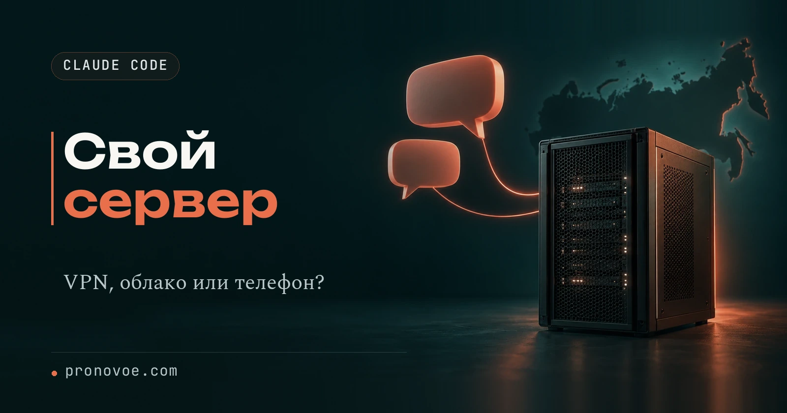
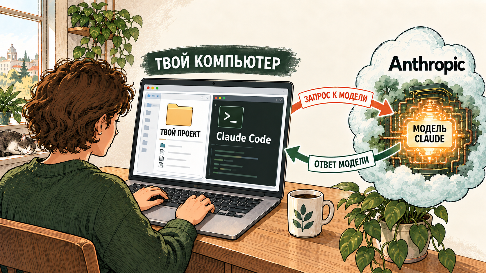
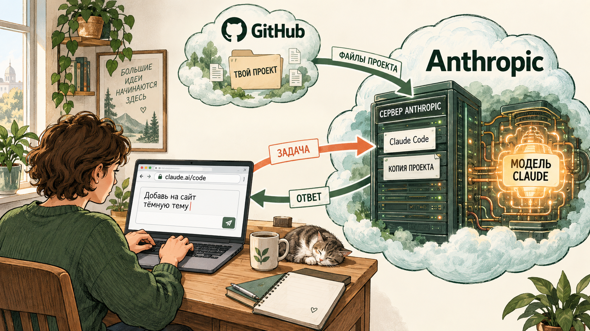
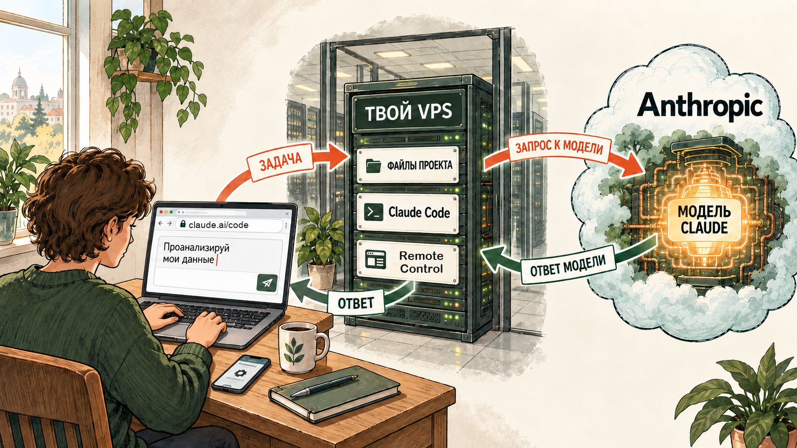
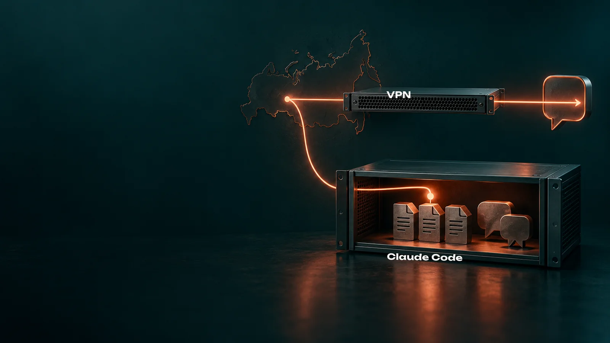
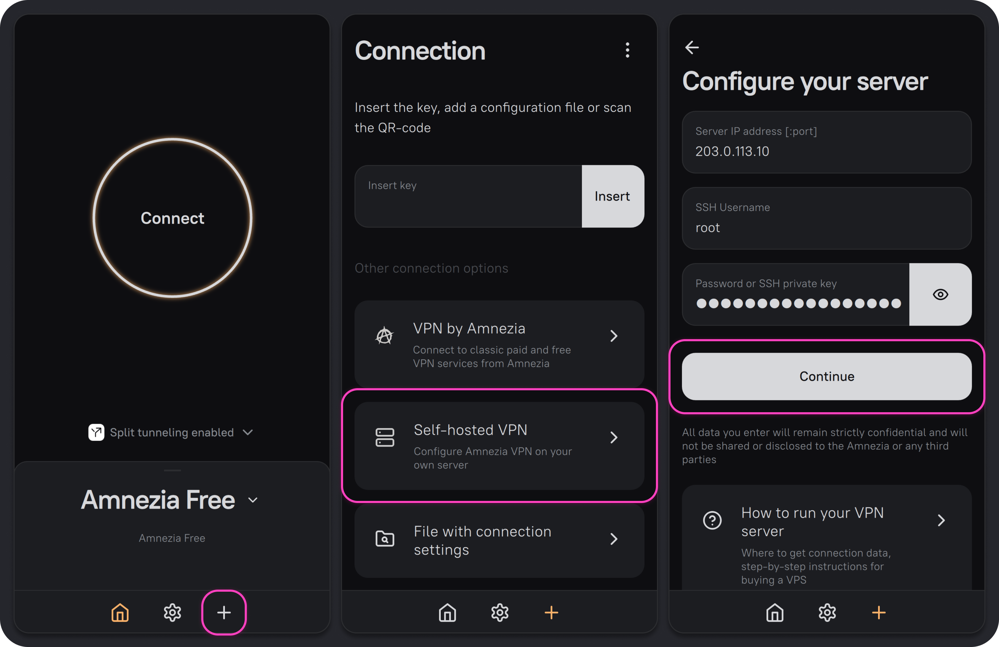

Технические настройки, которые снижают риски

Свой сервер для Claude: личный VPN, облако Anthropic и работа с телефона
Средний уровень
Вчера Claude открывался, сегодня показывает ошибку региона, а после смены VPN снова работает. Часто дело не в аккаунте, а в адресе: общий VPN меняет его без спроса, и одним адресом пользуются тысячи людей. Эту случайность можно убрать, а заодно получить Claude Code, который работает, пока ноутбук закрыт
Свой сервер не делает Claude умнее и не отменяет правил Anthropic. Он даёт другое: один постоянный адрес, который меняется только по твоему решению, и рабочее место, которое не зависит от крышки ноутбука. Ниже три способа это собрать, от самого простого до самого самостоятельного
Глава 1
Зачем свой сервер, если есть VPN
VPN был включён, страна не менялась, а доступ всё равно пропал. Разовая проверка не показывает, переключал ли VPN-сервис тебя на другой свой сервер при переподключении или после обрыва. Свой VPS убирает именно эту неопределённость: адрес закреплён за тобой
VPS - это небольшой компьютер в дата-центре, который сдают в аренду помесячно. У него есть свой адрес в интернете, операционная система и пароль для входа. Он работает круглые сутки, даже когда твой ноутбук выключен
Этот сервер может выполнять одну из двух ролей, и их легко перепутать:
Роль 1
Сервер как личный VPN
Claude, файлы и проекты остаются на твоём компьютере. Через сервер проходит только интернет-соединение, и сервисы видят его постоянный адрес
Роль 2
Сервер как рабочий компьютер
На сервер переезжают Claude Code и папка проекта. Задачи выполняются там, а ты открываешь сессию с телефона или другого компьютера
Что даёт свой VPS вместо общего VPN
- Один выбранный адрес. У VPS отдельный внешний IP. Пока хостинг сохраняет его за сервером, никто не переключит тебя на другой узел без твоего ведома
- Понятную проверку. Ты знаешь IP своей машины и можешь сравнить его с адресом, который видят браузер и терминал. Так проще заметить, что одно приложение пошло в обход VPN
- Контроль при обрыве. Автоподключение и KillSwitch не дают незаметно уйти на обычное соединение. Где их включить - во втором шаге
- Цену, которая не растёт от числа людей. Один сервер обслуживает всю семью через гостевые ключи
Глава 2
Три способа работы: где лежат файлы и где запущен Claude Code
Модель Claude во всех трёх способах работает у Anthropic. Меняется другое: где лежит твой проект и где запущен Claude Code, который читает файлы и выполняет команды. Посмотри на три схемы и выбери свою
На твоём устройстве
Проект и Claude Code на компьютере

Файлы и Claude Code у тебя. Выключишь компьютер - задача остановится. Свой VPN на сервере здесь только проводит соединение
Шаг 2. Свой VPN через AmneziaVPNЧерез сайт Claude
Проект из GitHub, работа на сервере Anthropic

После запуска компьютер можно выключить: облачная задача продолжит выполняться. Свой сервер не нужен
Claude Code в облаке AnthropicЧерез свой сервер
Проект и Claude Code работают на твоём VPS

Сервер продолжает работу после выключения компьютера, а сессию можно открыть с телефона. GitHub для этого способа не обязателен. Сообщения между телефоном и сервером проходят через сервис Anthropic, файлы и команды остаются на сервере
Claude Code на своём VPS и работа с телефонаЕсли ты просто пишешь в обычном чате claude.ai, отдельного «подключения к облаку» нет: это тот же аккаунт, а файлы добавляются в чат вручную. Три способа выше относятся к Claude Code, который работает с папкой проекта и меняет её файлы
Глава 3
Сколько стоит каждый способ
Здесь легко перепутать две разные оплаты. Аренда VPS оплачивает работу удалённого компьютера, подписка Claude оплачивает работу самой модели. Одна покупка не включает другую
| За что платишь | На компьютере | В облаке Anthropic | На своём VPS |
|---|---|---|---|
| Claude Code | $20/месClaude Pro | $20/месClaude Pro | $20/месClaude Pro |
| Где работает проект | Без новой арендына твоём компьютере | Включеносервер Anthropic входит в облачную сессию | $20,10/месVPS с 4 ГБ памяти, пример VDSina |
| Работа с телефона | Входит в подпискуRemote Control, пока компьютер включён | Входит в подпискуclaude.ai/code и приложение Claude | Входит в подпискуRemote Control, сервер работает круглосуточно |
| GitHub | Не обязателенможно хранить резервную копию проекта | БесплатноGitHub Free; нужен для запуска через сайт | Не обязателенможно хранить резервную копию проекта |
| Личный VPN на VPS | По желаниюAmneziaVPN бесплатно, VPS с 1 ГБ - $2,10/мес | По желаниюта же отдельная трата, если нужен свой VPN | Без доплатыVPN помещается на тот же VPS |
| Итого без личного VPN | $20/мес | $20/мес | $40,10/мес$20 за Pro и $20,10 за VPS |
На телефоне проведи по таблице в сторону, чтобы увидеть все три способа
Цены на 29 сентября 2026 года. Claude Pro стоит $20 при оплате за месяц; годовая оплата, налоги и дополнительные лимиты меняют итог. Для VPS взяты стандартные тарифы VDSina в Амстердаме: 1 ГБ памяти за $2,10 для личного VPN и 4 ГБ за $20,10 для Claude Code, которому нужно не меньше 4 ГБ памяти. Это примеры, а не единая цена любого хостинга
На компьютере Claude Code можно оплачивать и через API по фактическому расходу. Для работы с телефона через Remote Control нужна подписка Pro или Max: API-ключ он не поддерживает. Облачные сессии тоже работают по подписке. Дешёвые VPS за пару долларов подходят только для личного VPN

Прочитать схему проще, чем впервые настроить сервер. В ИИ-Лагере можно пройти этот маршрут на своём экране: выбрать способ доступа, подключить сервер и довести Claude Code до рабочего проекта. Первые три дня бесплатные - посмотреть практикум
Глава 4
Шаг 1. Арендовать сервер
Если взять самый дешёвый сервер без нужной системы или внешнего адреса, AmneziaVPN не сможет на нём развернуться. Цель шага - работающая машина с закреплённым адресом и без переплаты за мощность, которая не нужна
Сверь параметры до оплаты
- Только для личного VPN: KVM, внешний IPv4, доступ по SSH, Ubuntu 22.04 или 24.04, от 1 ГБ памяти и 10 ГБ диска. Это требования AmneziaVPN
- Для Claude Code на сервере: от 4 ГБ памяти, Ubuntu 20.04 или новее, процессор x64 или ARM64. Это требования Anthropic. Если позже захочешь держать на одном сервере и VPN, и Claude Code, сразу бери 4 ГБ и архитектуру x86-64
- Страна сервера: не Россия. Нидерланды и Германия есть в списке стран, где Claude работает официально
Создай сервер на VDSina
Регистрируйся на vdsina.com, именно .com, а не .ru: у vdsina.ru только московские серверы, и с российским адресом смысл пропадает
- Заведи аккаунт. Понадобится только почта, пароль от кабинета придёт письмом
- Пополни баланс: раздел «Финансы» → «Пополнить баланс». Минимальная сумма для зарубежной карты, российской карты и криптовалюты разная, панель показывает её сама. Деньги списываются посуточно
- Открой раздел «Тарифы и услуги» → «Стандартные VPS/VDS серверы». Соседние разделы Hi-CPU и «Серверы с GPU» стоят в десятки раз дороже и для этой задачи не нужны. Видишь трёхзначную цену - значит, открыт не тот раздел
- Выбери тариф: 1 ГБ для личного VPN или 4 ГБ, если на сервере будет работать Claude Code
- Локация - Амстердам, система - Ubuntu 22.04. Если ровно этой версии нет, бери 24.04
- Закажи сервер. Через несколько минут придёт письмо «Создан новый сервер», то же сообщение появится в панели: «Поддержка» → «Тикеты»
IP-адрес: 203.0.113.10 Пользователь: root Пароль: пароль_из_письма
Так выглядят три главные строки письма. Цифры выше - пример, у тебя будут свои
Сохрани данные доступа
IP, имя пользователя и пароль сохрани в менеджере паролей. Пароль администратора даёт управление всей машиной: не отправляй его в переписку и не клади в папку проекта. Если потерять IP или пароль, установка остановится на первом же экране
Результат: сервер запущен, у тебя есть его IP и безопасно сохранённый доступ
Глава 5
Шаг 2. Свой VPN через AmneziaVPN
AmneziaVPN - бесплатное приложение с открытым кодом. Оно само заходит на арендованный сервер и устанавливает на нём VPN, команды в терминале набирать не нужно
Установи приложение
- iPhone и iPad: App Store, приложение «AmneziaVPN». Нужен iOS 17 или новее
- Android: Google Play, приложение «Amnezia VPN»
- Windows и Mac: страница релизов AmneziaVPN на GitHub. Открой верхний релиз, разверни блок «Assets» и скачай файл, который оканчивается на x64.exe для Windows или macos.pkg для Mac
Подключи свой сервер
- Открой AmneziaVPN и нажми «Приступим». Если приложение уже открывалось раньше, нажми плюс
- Внизу, в блоке «Другие варианты подключения», выбери «Self-hosted VPN» с подписью «Настроить VPN на собственном сервере»
- На экране «Настроить ваш сервер» заполни три поля из письма хостинга: IP-адрес сервера, имя пользователя SSH (обычно root) и пароль. Пароль вставляй копированием, не перепечатывай. Нажми «Продолжить»
- На экране «Выберите тип установки» нажми «Автоматическая». Приложение установит протокол AmneziaWG
- Дождись конца установки: на экране будет надпись «Обычно это занимает не более 5 минут»
- Нажми большую кнопку «Подключиться» на главном экране

Проверь два разных результата
Надпись «Подключено» ещё не доказывает, что и браузер, и Claude Code идут через твой сервер. Проверь каждый путь отдельно
Браузер. Открой 2ip.ru. Страна должна смениться на страну сервера, а IP совпасть с IP сервера. Запиши сами цифры адреса
Терминал, если пользуешься Claude Code. В том же терминале, где запускаешь Claude Code, выполни команду:
curl -4 https://api.ipify.org
Команда должна вернуть тот же IP сервера. Проверка в браузере не доказывает, каким путём идёт программа в терминале
Через день-два. Снова открой 2ip.ru и сравни цифры с записанными. У своего сервера адрес один и не меняется. Если цифры поехали, где-то подмешался старый VPN: отключи его и заходи только через свой сервер
Настрой защиту от обрыва
VPN иногда отваливается сам, а иногда его просто забываешь включить. Тогда запросы уходят с обычного адреса. Способ защиты зависит от устройства
- Windows, macOS, Linux: в AmneziaVPN шестерёнка снизу → «Соединение» → «KillSwitch», включи верхний переключатель. Если VPN оборвётся, приложение заблокирует обычное подключение к интернету. Затем вернись в настройки → «Приложение» и включи «Автозапуск» и «Автоподключение»: первое открывает программу при включении компьютера, второе сразу поднимает VPN
- Android: в AmneziaVPN такого переключателя нет. Подключись к серверу в приложении, затем открой системные настройки Android → VPN → AmneziaVPN и включи «Постоянная VPN» и «Блокировать соединения без VPN». Названия пунктов могут отличаться на разных телефонах
- iPhone и iPad: переключателя KillSwitch в AmneziaVPN нет. После сбоя связи проверь, что VPN снова подключён, прежде чем продолжать работу
Подробности по устройствам - в официальной инструкции Amnezia
Подключи другие свои устройства и семью
Пароль администратора никому не раздают. Для этого есть гостевой доступ: в AmneziaVPN нажми «Поделиться» в нижней панели и выбери «Поделиться доступом к VPN без возможности управления сервером». Задай имя, выбери сервер и протокол, приложение выдаст QR-код или ключ
Человек ставит AmneziaVPN, нажимает «Приступим» и сканирует QR-код или вставляет ключ. Такой ключ не даёт управлять сервером, а во вкладке «Пользователи» его можно отозвать. Вариант «Поделиться полным доступом к серверу и VPN» оставь только для собственных устройств: по инструкции Amnezia отозвать его невозможно
Результат: твои устройства выходят в интернет через личный VPN, адрес одинаковый в браузере и в терминале. Если нужно только это, настройка закончена. Если нужен Claude Code, который работает без твоего компьютера, читай дальше
Глава 6
Claude Code в облаке Anthropic
Задача должна продолжаться после закрытия ноутбука, а результат хочется проверить с телефона. Облачная сессия Anthropic решает это без аренды сервера. Цена удобства: проект нужно положить в GitHub, а твои локальные настройки в облако не переезжают
По инструкции Anthropic облачные сессии доступны на Pro, Max, Team и отдельных местах Enterprise. Сессия работает в отдельной облачной среде и продолжается, когда ноутбук закрыт
Положи проект в GitHub
Если проект пока только на компьютере, открой GitHub, создай закрытый репозиторий, затем через Add file → Upload files перетащи в него папку проекта и нажми Commit changes. Это официальный способ загрузки через браузер. Для большого проекта или уже настроенного Git есть инструкция GitHub по переносу репозитория
До загрузки убери из проекта пароли, токены и личные данные, которые не нужны облачной задаче
Запусти задачу
- Открой claude.ai/code и войди в свой аккаунт Claude
- При первом запуске подключи GitHub по предложению страницы. Разреши доступ к нужному репозиторию; для закрытого репозитория проверь, что Claude GitHub App установлен именно на него
- Если страница предлагает создать облачную среду Default, пройди этот шаг. На Pro и Max среда обычно создаётся при первом подключении
- Под полем запроса выбери репозиторий и ветку, напиши задачу и отправь. Claude скопирует проект, создаст свою ветку и покажет ход работы
- Открой список изменений и проверь каждый файл. Если результат подходит, создай запрос на включение изменений в основную ветку (pull request) или перенеси файлы в свой проект
Запуск из терминала
Если Claude Code уже установлен, а папка проекта - Git-репозиторий хотя бы с одним сохранённым коммитом, облачную сессию можно запустить из терминала. Выполни в папке проекта:
claude --cloud
Если у репозитория нет адреса на GitHub, программа может загрузить локальный репозиторий прямо в облачную сессию. Файлы вне Git и прежний локальный разговор сами не переезжают
Результат: задача и изменённые файлы доступны в облачной сессии с любого устройства. Свой сервер и AmneziaVPN для этого способа не нужны
Глава 7
Claude Code на своём VPS и работа с телефона
Хочется, чтобы Claude Code работал круглосуточно и с твоими файлами, без GitHub и без включённого ноутбука, а управлять им можно было с телефона. Тогда Claude Code переезжает на сервер, а телефон подключается к нему через Remote Control - официальную функцию Anthropic
Что понадобится: сервер с 4 ГБ памяти из первого шага и подписка Pro или Max. API-ключ для Remote Control не подходит
Перенеси проект на сервер
Открой терминал на своём компьютере. Замени путь к папке, имя пользователя и IP сервера на свои значения и выполни один из двух вариантов
Если вход на сервер по паролю:
scp -r "/полный/путь/к/проекту" root@IP_СЕРВЕРА:~/
Если вход по SSH-ключу:
scp -i "/путь/к/ключу" -r "/полный/путь/к/проекту" root@IP_СЕРВЕРА:~/
Затем подключись к серверу той же командой, выбрав свой вариант входа:
ssh root@IP_СЕРВЕРА
По ключу: ssh -i "/путь/к/ключу" root@IP_СЕРВЕРА. Если проект уже лежит в GitHub, вместо копирования его можно склонировать прямо на сервере
В терминале сервера проверь, что папка появилась:
ls -la ~
Установи Claude Code на сервере
В терминале сервера выполни официальный установщик, затем проверь версию:
curl -fsSL https://claude.ai/install.sh | bash
claude --version
Появился номер версии - установка прошла. Если терминал пишет, что команда claude не найдена, открой новое подключение к серверу и повтори проверку. При ошибке 403 или другой ошибке curl не повторяй команду вслепую: сверь её текст с разбором ошибок установки
Войди в аккаунт
Перейди в папку проекта и запусти Claude Code:
cd ~/ИМЯ_ПАПКИ_ПРОЕКТА claude
- Выбери вход через подписку Claude. На сервере браузер не откроется сам: нажми клавишу c, чтобы скопировать ссылку для входа
- Открой ссылку на телефоне или компьютере с включённым VPN и войди в свой аккаунт
- Если браузер покажет код, вставь его в терминал сервера в строку Paste code here if prompted
- Терминал напишет Login successful. Нажми Enter
- Claude Code спросит, доверяешь ли ты этой папке. Подтверди: без этого Remote Control из папки не запустится
Так вход устроен по официальной инструкции Anthropic для подключения по SSH. Выйди из Claude Code командой /exit: дальше его запустит Remote Control
Запусти Remote Control так, чтобы он не выключился вместе с терминалом
Если закрыть окно SSH, Claude Code на сервере остановится. Чтобы он продолжал работать, Anthropic советует запускать его внутри программы tmux: она держит сессию на сервере открытой, даже после отключения. В Ubuntu tmux обычно уже установлен
1. Открой постоянную сессию tmux:
tmux new -s claude
Если сервер ответил, что команда не найдена, установи её: sudo apt install tmux
2. Внутри неё перейди в папку проекта и запусти Remote Control:
cd ~/ИМЯ_ПАПКИ_ПРОЕКТА claude remote-control
При первом запуске программа спросит Enable Remote Control? (y/n). Нажми y. На экране появится ссылка на сессию, а по нажатию пробела - QR-код
3. Отключись от tmux, не останавливая Claude Code: нажми Ctrl+B, отпусти, затем нажми D. Вернуться позже:
tmux attach -t claude
Открой сессию с телефона
- Сканируй QR-код из терминала сервера: сессия откроется в приложении Claude
- Или открой приложение Claude, нажми Code в навигации и найди сессию в списке. Сессия на сервере отмечена значком компьютера с зелёной точкой
- С компьютера та же сессия открывается на claude.ai/code
Результат: проект и Claude Code работают на сервере, а ты отправляешь задачи и смотришь изменения с телефона или любого браузера. Ноутбук можно закрыть
Что важно знать про Remote Control
- Сессия живёт, пока работает Claude Code на сервере. После перезагрузки сервера зайди по SSH и снова выполни команды из пункта про tmux
- Долгий обрыв сети на сервере. Примерно через 10 минут без связи режим claude remote-control завершается. Запусти его снова
- Вход в аккаунт истекает. За три дня до этого Claude Code предупредит сообщением Your login expires in 3 days. Зайди в tmux, останови Remote Control клавишами Ctrl+C, запусти claude, выполни /login, выйди командой /exit и снова запусти claude remote-control. Иначе после окончания срока сессия перестанет работать
- Переписка сессии хранится у Anthropic, чтобы синхронизироваться между устройствами. Файлы и команды остаются на твоём сервере
Для удобной работы с файлами проекта к тому же серверу можно подключить VS Code по SSH. Это отдельный, необязательный способ, Remote Control от него не зависит
Глава 8
Если что-то пошло не так
Не переустанавливай сервер при первой ошибке. Сначала найди звено, на котором оборвалась цепочка: сервер, VPN, Claude Code или Remote Control
AmneziaVPN пишет ошибку с кодом 300-305 при установке
Почти всегда это опечатка. Проверь IP, имя пользователя и пароль без лишних пробелов, пароль вставляй копированием. Сверь сервер с требованиями: Ubuntu 22.04 или 24.04, KVM, внешний IPv4, x86-64
«Тайм-аут подключения к серверу»
Зайди в панель хостинга и проверь, что сервер создан, запущен и оплачен
VPN работал, а потом перестал подключаться
Проверь баланс хостинга: при посуточном списании сервер выключается, когда деньги заканчиваются. Если сервер работает, сменить порт протокола советует официальный FAQ Amnezia, вопрос «Как поменять порт VPN-протокола?». После смены порта или пересоздания сервера гостевые ключи придётся выдать заново
Не подключается только один человек
Проверь его гостевой ключ и выбранный протокол. Не меняй настройки всех устройств сразу
VPN подключён, но Claude не открывается или пишет 403
Проверь внешний IP в браузере и в терминале. Если интернет работает, а Claude отказывает, постоянный адрес - не гарантия: адрес дата-центра тоже может не пройти проверку сервиса. Если сервис показывает отключение аккаунта, дальше нужен разбор ограничений доступа, а не ещё один сервер
Claude Code не устанавливается на сервере
Проверь версию Ubuntu, 4 ГБ памяти и доступ сервера в интернет. При ошибке curl или 403 сохрани полный текст ошибки и сверь его с разбором ошибок установки
Вход в аккаунт не завершается
Открывай ссылку входа на устройстве с включённым VPN. Если браузер показал код, вставь его в терминал сервера. Не закрывай терминал, пока не появится Login successful, и входи в тот же аккаунт, что на телефоне
Remote Control не запускается
Проверь, что вход выполнен через подписку Pro или Max: API-ключ не подходит. Если на сервере задана переменная ANTHROPIC_API_KEY, выполни unset ANTHROPIC_API_KEY и запусти снова. Запускай команду из папки проекта, которой уже подтверждено доверие
Сессия пропала из списка на телефоне
Скорее всего, Claude Code на сервере остановился: сервер перезагрузился, пропала сеть или Claude Code был запущен без tmux. Зайди по SSH, выполни tmux attach -t claude. Если сессии tmux нет, запусти Remote Control заново
Глава 9
Что ещё умеет твой сервер
Сервер с 4 ГБ памяти, на котором работает Claude Code, может заодно быть твоим личным VPN и площадкой для задач, которым нужен круглосуточный запуск
VPN и Claude Code на одном сервере
На одном VPS могут работать и AmneziaVPN, и Claude Code: VPN обслуживает соединение твоих устройств, Claude Code работает со своими папками. Именно так телефон и сервер получают один адрес. Для начала безопаснее закончить один способ и проверить его, затем добавлять второй. Если просишь Claude менять настройки сети на сервере, пусть сначала покажет план и не трогает доступ по SSH и порты VPN
Следующий уровень
- Telegram-боты и обработчики сообщений
- Небольшие сайты и внутренние панели
- Сценарии по расписанию и автоматические проверки
- Git-репозитории, сборки и тесты
- Несколько ИИ-агентов с отдельными проектами и задачами
Не складывай всё в один процесс и не открывай наружу лишние порты. Для каждого сервиса нужны своя папка, свой журнал и понятный способ восстановления. Тогда сервер становится не арендованной коробкой с VPN, а рабочим местом, которое трудится, пока ты спишь
Документы сервисов
Официальные источники
- Anthropic: поддерживаемые страны и регионы
- Anthropic: требования и установка Claude Code
- Anthropic: вход в Claude Code
- Anthropic: ошибки установки и входа
- Anthropic: Remote Control
- Anthropic: запуск Claude Code в облаке
- Anthropic: облачная сессия из терминала
- Anthropic: тарифы Claude
- GitHub: загрузка файлов в репозиторий
- GitHub: перенос локального репозитория
- AmneziaVPN: требования к VPS
- AmneziaVPN: установка VPN на свой сервер
- AmneziaVPN: KillSwitch
- AmneziaVPN: гостевой доступ
- AmneziaVPN: частые вопросы
- VDSina: стандартные тарифы VPS
- CloudCLI: работа на удалённом сервере
Следующий шаг
Сервер есть, теперь дай ему настоящую работу
В ИИ-Лагере ты разберёшься с Claude Code на своём проекте: от первой папки и понятной задачи до рабочих агентов и автоматизации. Сервер останется твоей постоянной площадкой, а не дорогой пустой коробкой
Перейти в ИИ-Лагерь